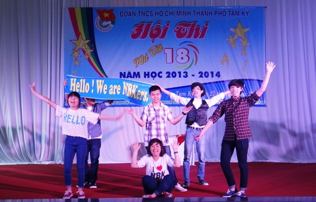
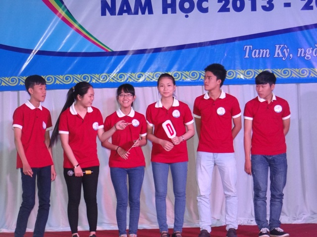
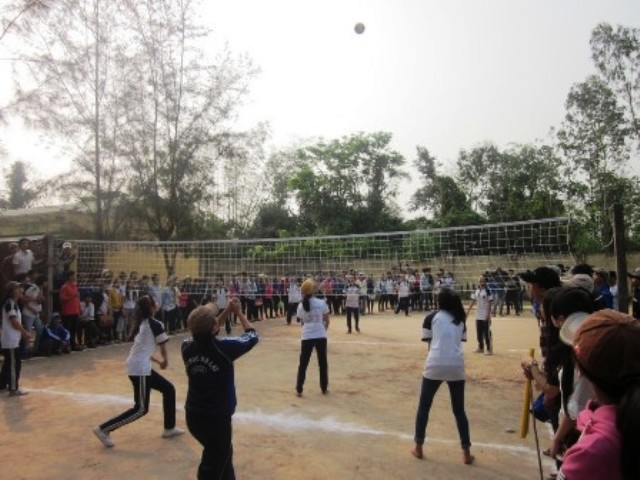

Tam Kỳ - Phú Ninh tổ chức hội thi Khi tôi 18

Lần cập nhật cuối lúc Thứ sáu, 28 Tháng 3 2014 09:59 Viết bởi Administrator Thứ sáu, 28 Tháng 3 2014 09:52
Sáng nay (27.3), Thành đoàn Tam Kỳ tổ chức Hội thi “Khi tôi 18” dành cho học sinh khối Trung học phổ thông. Đây là lần đầu tiên Thành đoàn Tam Kỳ tổ chức hội thi này. Đồng chí Đinh Nguyên Vũ- Phó Bí thư Thường trực Tỉnh đoàn về dự.

Thành đoàn Tam Kỳ tổ chức hội thi Khi tôi 18
Chương trình Khi tôi 18 là một chương trình rất ý nghĩa, không chỉ là sân chơi lành mạnh cho các em học sinh, nơi để các em thể hiện được ước mơ, hoài bão, tài năng, trách nhiệm và sự tham gia đóng góp vào cộng đồng xã hội, mà qua đó có tác dụng giáo dục ý thức chấp hành pháp luật, hỗ trợ, trang bị kiến thức phổ thông, kỹ năng thực hành xã hội và định hướng nghề nghiệp, việc làm cho học sinh, nhằm chuẩn bị những điều kiện tốt nhất để các em trở thành công dân 18 tuổi.

Tham dự hội thi lần này có 5 đội đến từ 5 trường trên địa bàn thành phố gồm: Trường THPT chuyên Nguyễn Bỉnh Khiêm, trường THTP Trần Cao Vân, THPT Lê Quý Đôn, THPT Phan Bội Châu và THPT Duy Tân.
Hội thi diễn ra sôi nổi với các phần thi:18 tài năng, 18 chinh phục, 18 tự tin và 18 chung sức. Với sức trẻ, sự sáng tạo, tài năng các em học sinh đã mang đến các phần thi sôi động, ý nghĩa.
Kết quả, trường THPT chuyên Nguyễn Bỉnh Khiêm đạt giải nhất, giải nhì được trao cho trường THPT Trần Cao Vân, trường THPT Duy Tân đạt giải ba, 02 trường THPT Lê Quý Đôn, Phan Bội Châu đạt giải khuyến khích.
Đây là một trong những hoạt động thiết thực nhằm đẩy mạnh phong trào thi đua xây dựng trường học thân thiện, học sinh tích cực, đồng thời cũng là hoạt động chào mừng 83 năm ngày thành lập Đoàn.
* Trước đó, Đoàn các trường THPT Trần Văn Dư, Nguyễn Dục (huyện Phú Ninh) tổ chức miting kỷ niệm ngày thành lập Đoàn TNCS Hồ Chí Minh (26/3/1931-26/3/2014), tổ chức ngày hội thanh niên học sinh và chương trình Khi tôi 18.

Các hoạt động diễn ra trong không khí vui tươi, sôi nổi thu hút đông đảo học sinh tham gia. Buổi lễ đã ôn lại truyền thông hào hùng của Đoàn TNCS Hồ Chí Minh, những kết quả của Đoàn trường trong các năm học qua, đồng thời phát động phong trào thanh niên tình nguyện trong học sinh toàn trường.
Trong phần hội, các nội dung được tổ chức phong phú như: thi kéo co, đổ nước vào chai, cắm hoa, bóng chuyền nữ, thi tìm hiểu về Biển đảo Việt Nam,.... đã tạo nên không khí thi đua sôi nổi. Riêng phần thi Khi tôi 18 đã thu hút nhiều nhất sự quan tâm của thầy cô, học sinh nhà trường. Với 4 phần thi: ước mơ 18, hiểu biết 18, tài năng 18 và bản lĩnh 9X, các đội dự thi đã thể hiện tài năng, hiểu biết, sự sáng tạo, thông minh, nhanh nhẹn và đặc biệt là tinh thần làm việc nhóm rất hiệu quả. “Khi tôi 18” là một sân chơi bổ ích, đem đến cho học sinh một cái nhìn đa chiều, thể hiện được suy nghĩ của lứa tuổi chứa nhiều mộng mơ. Bên cạnh đó, còn thể hiện được sự đoàn kết, đồng lòng của các Chi đoàn, sự quyết tâm cao độ để giành chiến thắng của các bạn đoàn viên.
- 18/10/2014 07:08 - Sáng tạo trẻ chuyên Nguyễn Bỉnh Khiêm
- 25/09/2014 00:00 - Những người trẻ mê thiên văn học
- 15/09/2014 08:52 - Trao giải 5 đề tài đạt giải cuộc thi sáng tạo than…
- 30/08/2014 07:07 - Một lớp có 5 em học sinh đỗ thủ khoa đại học
- 01/04/2014 15:52 - Bộ GD&ĐT vừa công bố lịch thi tốt nghiệp THPT năm …
- itnbk.edu.vn
- 12/02/2014 16:21 - Kỳ thi học sinh giỏi quốc gia năm học 2013 - 2014 …
- 06/02/2014 22:18 - Kỳ tích Võ Quang Hưng
- 25/01/2014 22:14 - Bí thư Tỉnh ủy Nguyễn Đức Hải chúc mừng trường THP…
- 13/09/2013 14:23 - Khai mạc giải Việt dã truyền thống Báo Quảng Nam m…
- 09/09/2013 08:41 - Ngành Giáo dục Quảng Nam tưng bừng khai giảng năm …